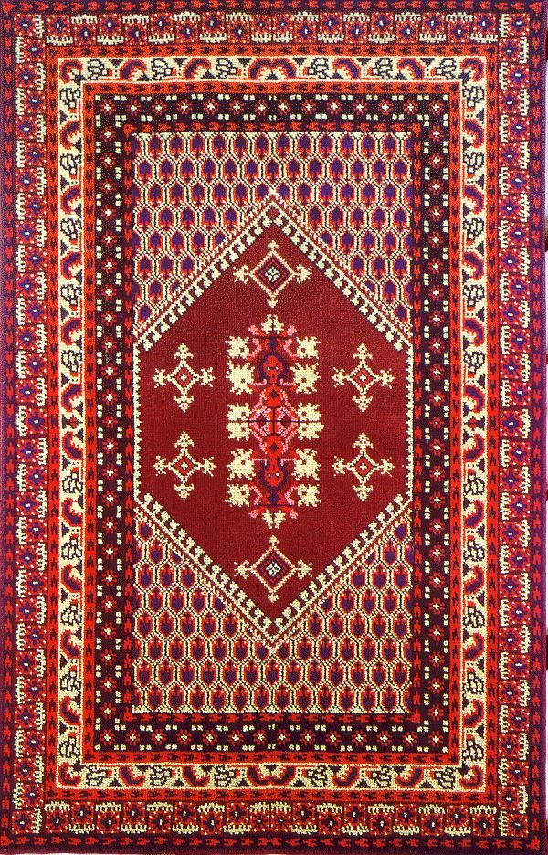
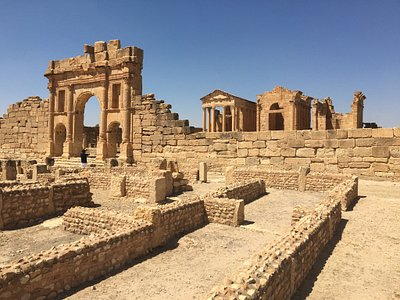

Histoire
3000 ans de
civilisations
De Carthage à la révolution de 2011, la Tunisie a été le carrefour de toutes les grandes civilisations méditerranéennes. Punique, romaine, arabe, ottomane, française — chaque époque a laissé une empreinte indélébile.
Villes
24 gouvernorats
à explorer
De la capitale animée de Tunis aux villages troglodytes de Matmata, des plages de Djerba aux portes du Sahara à Douz — chaque ville tunisienne est un monde à part entière avec son histoire et ses trésors.


Culture
L'âme
tunisienne
Un métissage unique de traditions berbères, arabes, andalouses et méditerranéennes. Musique malouf, artisanat millénaire, gastronomie épicée et hospitalité légendaire — la culture tunisienne est vivante et généreuse.
Tourisme
Voyager en
Tunisie
Plages méditerranéennes, sites archéologiques millénaires, excursions dans le Sahara — la Tunisie concentre une diversité extraordinaire sur un territoire accessible. Guide complet pour préparer votre voyage.


Nature
Entre mer
et désert
De la forêt de chênes-lièges de Feija aux dunes infinies du Sahara, du lac Ichkeul habité par des milliers de flamants roses au point culminant du Djebel Chambi — la nature tunisienne est d'une diversité saisissante.